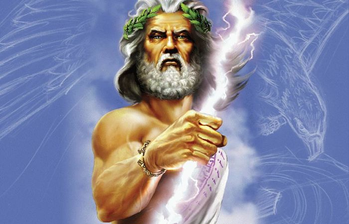
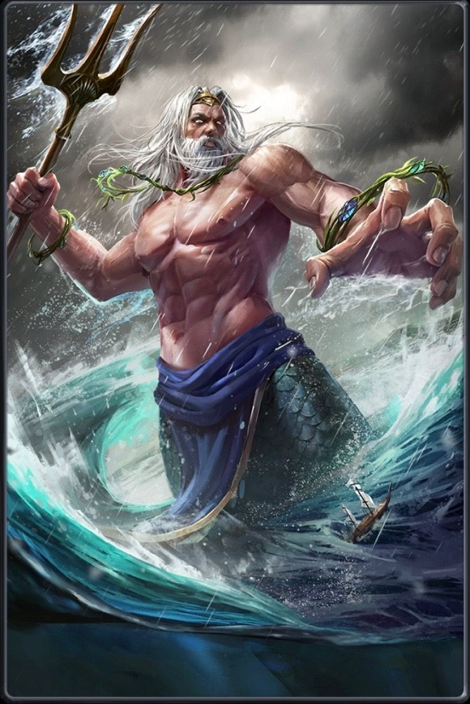
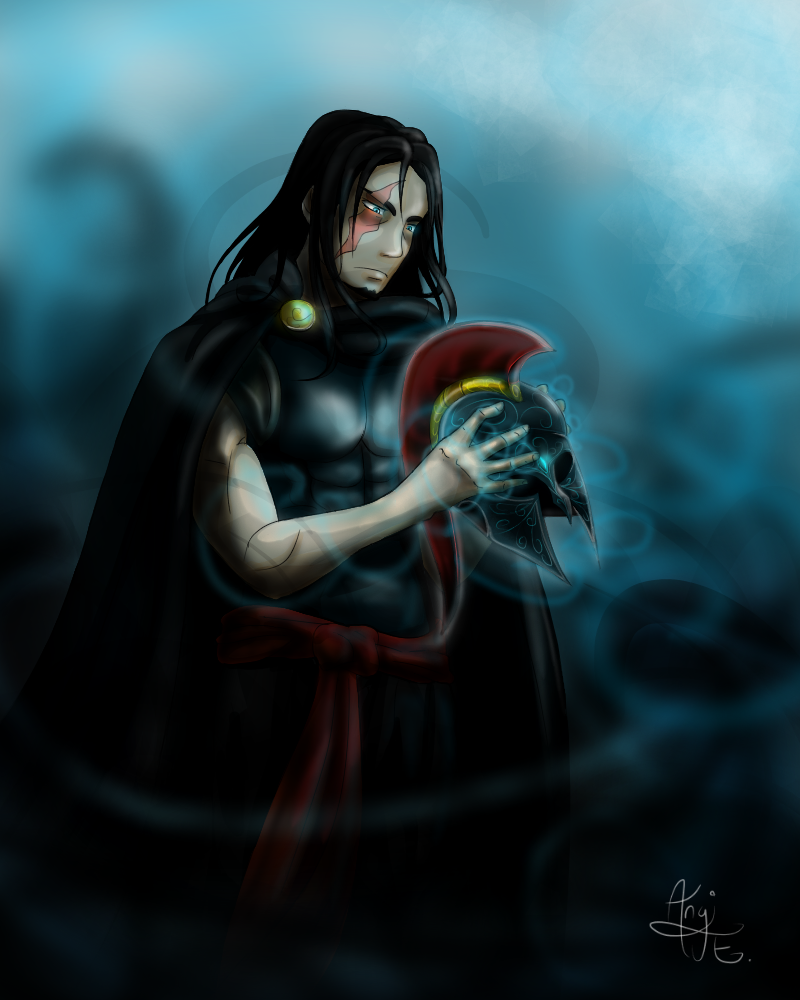
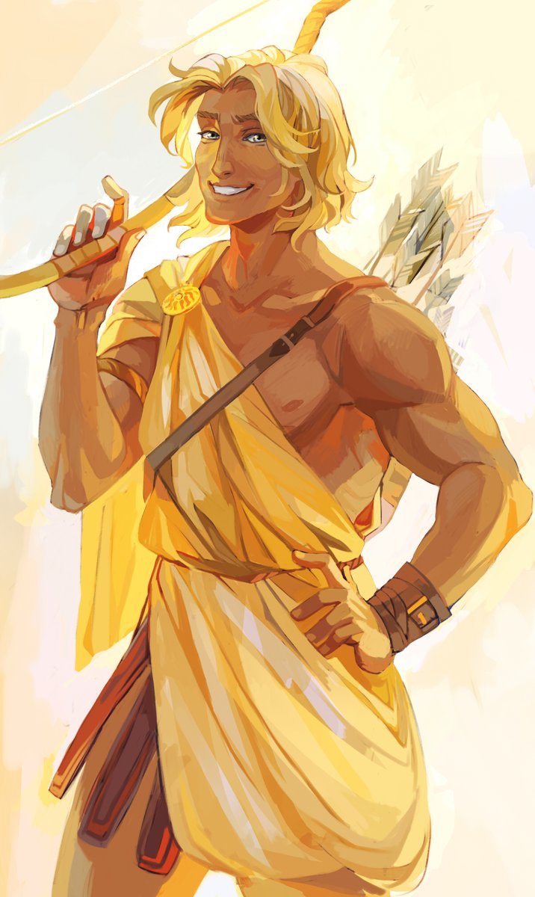
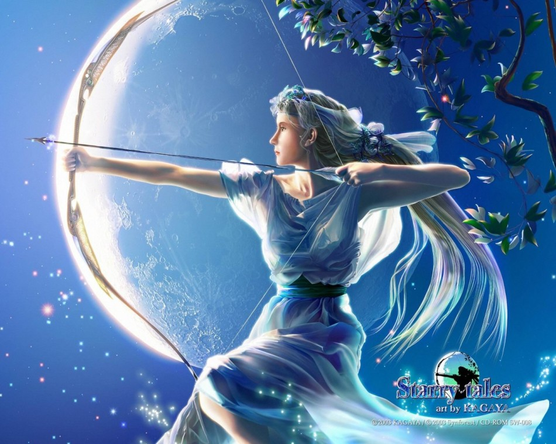
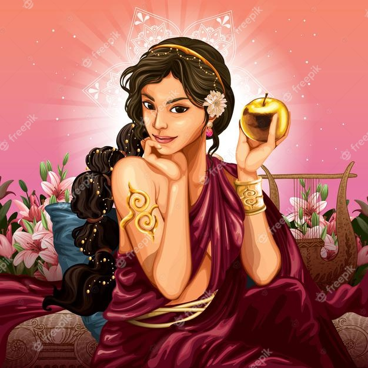
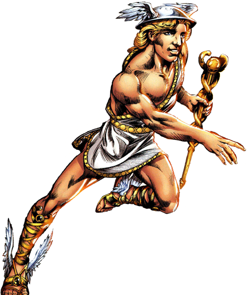
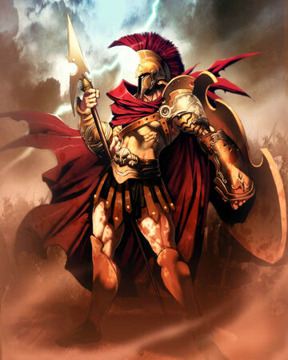
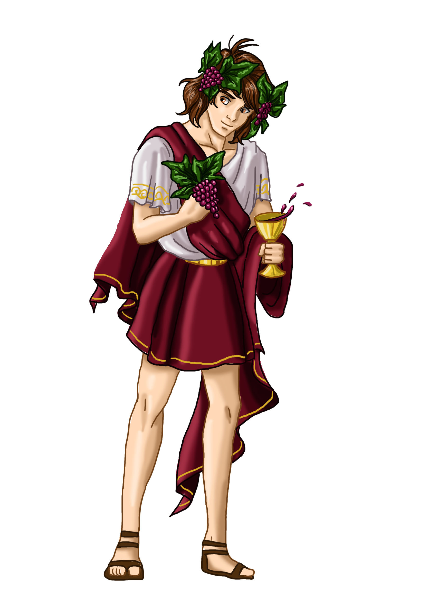

Dioses
Zeus
En la mitología griega, Zeus es una divinidad a la que se denomina a veces con el título de «padre de los dioses y los hombres», que gobierna a los dioses del Olimpo como un padre a una familia, de forma que incluso los que no eran sus hijos naturales se dirigen a él como tal. Es el rey de los dioses y supervisa el universo. Es el dios del cielo y el trueno y por ende de la energía. Entre sus atributos se incluyen el cetro y la corona (como símbolos de su poder), el rayo, el águila, el toro y el roble Hijo de Cronos y Rea, era el más joven de sus descendientes. En la mayoría de las tradiciones aparece casado con Hera (su hermana y esposa) aunque en el oráculo de Dódona su esposa era Dione, con quien según la Ilíada es padre de Afrodita. Es conocido por sus numerosas aventuras y amantes, fruto de las cuales fueron muchas deidades y héroes, incluyendo Atenea, Apolo, Artemisa, Hermes, Perséfone, Dioniso, Perseo, Heracles, Helena, Minos, las Musas y ninfas como Eco. Con Hera suele decirse que Zeus fue padre de Ilitía, Ares, Enio, Hebe y Hefesto.
Cronos fue padre de varios hijos con Rea: Hestia, Deméter, Hera, Hades y Poseidón, pero se los tragó tan pronto como nacieron, ya que Gea y Urano le habían revelado que estaba destinado a ser derrocado por su propio hijo, tal como él había destronado a su padre. Pero cuando Zeus estaba a punto de nacer, Rea pidió consejo a Gea para urdir un plan que lo salvara, y así Cronos tuviera el justo castigo a sus actos contra Urano y contra sus propios hijos. Rea se escondió en la isla de Creta, donde dio a luz a Zeus. Luego engañó a Cronos, dándole una piedra envuelta en pañales que este tragó en seguida sin desconfiar.
Tras hacerse adulto, Zeus obligó a Crono a regurgitar primero la piedra (que se la dejó a Pitón bajo las cañadas del Parnaso como señal a los hombres mortales, el Ónfalos) y después a sus hermanos en orden inverso al que los había tragado. En algunas versiones, Metis le dio a Crono un emético para obligarlo a vomitar los bebés, y en otras Zeus abrió el estómago de Crono. Luego Zeus liberó a los hermanos de Crono, los Hecatónquiros y los Cíclopes, de su mazmorra en el Tártaro y mató a su guardiana, Campe. Como muestra de agradecimiento, los Cíclopes le dieron el trueno, el rayo o el relámpago, que habían sido previamente escondidos por Gea. En una guerra llamada la Titanomaquia, Zeus y sus hermanos y hermanas junto con los Hecatónquiros y Cíclopes, derrotaron a Crono y a los otros Titanes, que fueron encerrados en el Tártaro, un lugar húmedo, lúgubre, frío y neblinoso en lo más profundo de la Tierra y allí quedaron custodiados por los Hecatónquiros. Atlas, uno de los titanes que luchó contra Zeus, fue castigado a sostener la bóveda celeste.
Tras la batalla con los Titanes, Zeus se repartió el mundo con sus hermanos mayores, Poseidón y Hades, echándoselo a suertes: Zeus consiguió el cielo y el aire, Poseidón las aguas y Hades el mundo de los muertos (el inframundo). La antigua tierra, Gea, no podía ser reclamada y quedó bajo el dominio de los tres según sus capacidades, lo que explica por qué Poseidón era el dios de los terremotos y Hades reclamaba a los humanos que morían.
Gea estaba resentida por cómo Zeus había tratado a los Titanes, porque eran sus hijos. Poco después de subir al trono como rey de los dioses, Zeus tuvo que luchar con otros hijos de Gea, los monstruos Tifón y Equidna. Zeus derrotó a Tifón atrapándolo bajo una montaña, pero dejó a Equidna y a sus hijos con vida como desafío para futuros héroes.
Poseidon
Poseidón es el dios del mar en la mitología griega. Hijo de Cronos y Rea y hermano de Zeus y Hades, existen varias teorías acerca de si fue tragado junto a sus hermanos por su padre, o por el contrario quedó oculto como Zeus. Según la Ilíada, cuando el mundo se dividió en tres, Zeus recibiría la tierra y el cielo, Hades el inframundo y Poseidón el mar.
Este poderoso dios no sólo tiene dominio sobre el mar, también puede desatar terribles tempestades, hacer caer las rocas sobre las costas con un golpe de su tridente y conseguir que brote agua de manantiales espontáneos.
Cuentan diversos autores, que Poseidón participaría durante un año, junto a Apolo y Éaco, en la construcción de la muralla de Troya. No obstante, cuando Laomedonte se negó a pagar el precio convenido, creó un gran monstruo marino que comenzó a asolar los pueblos troyanos.Quizá fuera precisamente este momento en el que Poseidón comenzó a tener ese rencor por Troya, algo que se puede ver cuando intervino a favor de los aqueos en su guerra con los troyanos.
Es curiosa la parte de las leyendas que muestran la capacidad del dios a Perder frente al resto de dioses. Cuando los mortales se establecían en una ciudad, era costumbre acoger una divinidad para que la protegiera. En ocasiones existían conflictos entre dichos dioses, pues eran varios los que querían optar a ese papel. Poseidón perdía bastantes veces. Por ejemplo, podemos destacar cuando puso sus ojos en Atenas. Quiso tomar posesión de su papel como protector haciendo brotar un pozo de agua salada en la cima de la Acrópolis. No obstante, pronto llegaría Atenea, la cual plantó un olivo par reivindicó también su papel como protectora. Al final, el tribunal fallaría a favor a la diosa y Poseidón, encolerizado, inundó la llanura de Eleusis.
Eran también famosas las aventuras amorosas del dios. Fueron muchas las que pasaron por su cama, y engendró muchísimos hijos. No obstante, mientras los de Zeus eran casi siempre héroes hermosos, los de su hermano eran casi siempre gigantes, feos, malvados y violentos. Así, con Toosa engendraría al cíclope Polifemo, con Medusa al gigante Crisaro y con Amimone a Náuplio, por nombrar a algunos.
Hades
En la mitología griega, Hades era uno de los hijos varones de Crono y Rea, hermano de Zeus y Poseidón. Al nacer, fue tragado por Crono como el resto de sus hermanos, que sólo pudieron ser expulsados gracias a la intervención de Zeus.
Participó con Poseidón y Zeus en la lucha con los Titanes, siendo armado por los Cíclopes con un casco que lo volvía invisible, de hecho, su nombre significa “el invisible”. Hades penetraría la noche anterior a la batalla en el campamento de los Titanes. Como estaba armado con su casco, nadie lo vio, pudiendo así destruir todas las armas de estos. La guerra duró 10 años, y finalmente los jóvenes dioses ganaron.
Tras esta ardua guerra, los tres hermanos echaron a suertes los reinos a gobernar. Mientras que a Zeus le tocó el cielo y a Poseidón los océanos y mares, Hades recibió el inframundo, el reino invisible al que acuden los muertos tras dejar el mundo. Hades era por tanto el rey del mundo de los muertos, un trabajo que desempeñaba ayudado con otros dioses menores, sobre los que evidentemente tenía completa autoridad.
Su reina era Perséfone, hija de Zeus y Deméter. Cómo ni Zeus ni Deméter estaban por la labor de que su hija pasara su vida en el inframundo, Hades no vio otro remedio que raptar a la joven. Una vez en sus tierras le dio de comer, algo bastante inteligente pues todo aquel que comía algo en el inframundo permanecería para siempre en él.
Hades tenía bastante mal carácter cuando se trataba de sus dominios. No permitía que sus súbitos lo abandonaran, además reaccionaba con bastante violencia si alguien trataba de robarle almas. Por último, odiaba a todo aquel que intentaba burlar a la muerte y cruzar el inframundo, como Sísifo o Piríto.
Como dios de los muertos, los griegos temían muchísimo su figura. Por este motivo su nombre era muy pocas veces mencionado, pues pensaban que simplemente nombrarlo ya era un mal augurio. Por este motivo buscaban eufemismos para poder referirse a él.
Otros Dioses
| Apolo |  | Artemisa |  | Hera |

| Afrodita |  | Hestia | Hermes |  | Hefesto |

|
|
|---|---|---|---|---|---|---|---|---|---|---|---|---|---|
| Dios de la musica y adivinacion | Diosa de la cacería | Diosa de la familia | Diosa del amor | Diosa del hogar | Dios mensajero | Dios de la forjas y de la herreria | |||||||
| Atenea |

| Ares |  | Dioniso |  | ||||||||
| Diosa de la sabiduria | Dios de la guerra | Dios del vino |